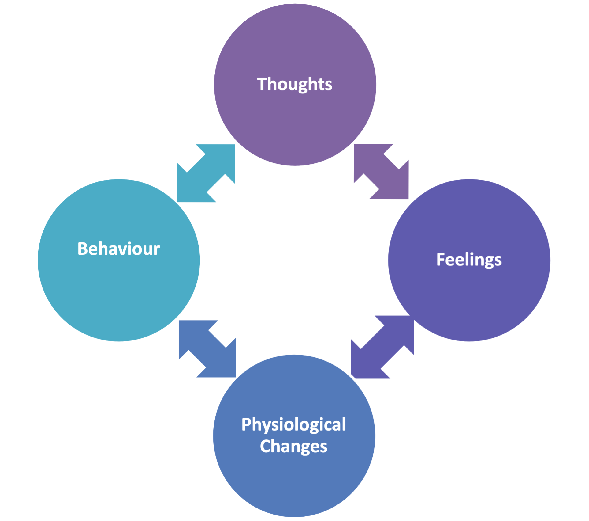
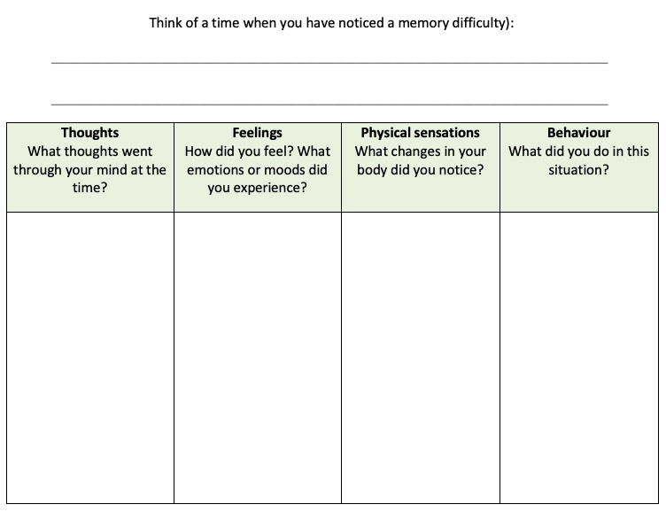
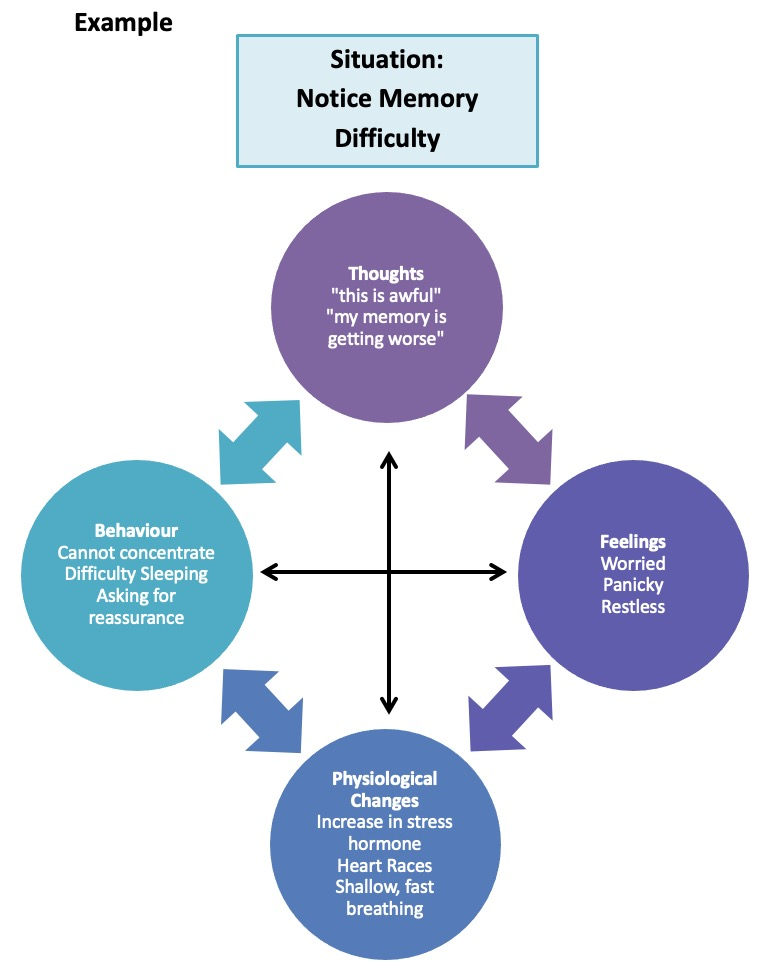
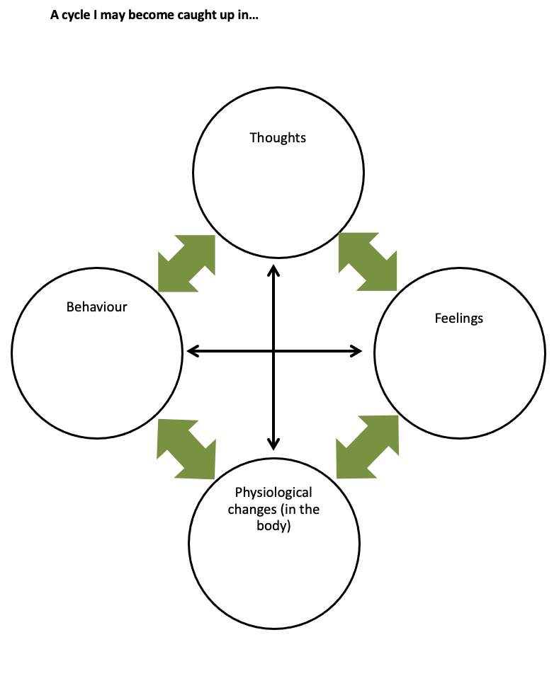
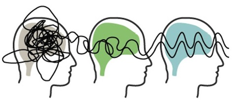
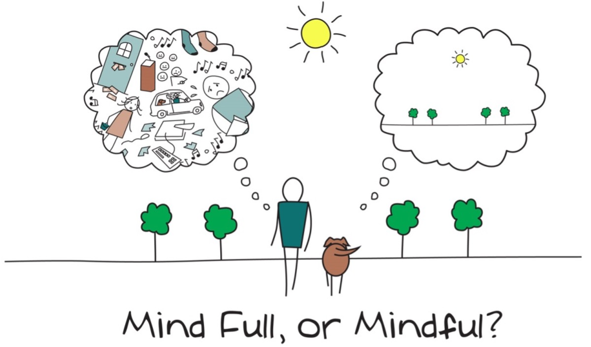

5 Mood and Wellbeing
5.1 Introduction
As mentioned previously, having memory difficulties can impact on lots of different aspects of our lives. This includes our mood. In this section we will explore the reciprocal impact of mood and cognitive functioning. We will also think about some strategies to help us manage how we feel, which can in turn have a positive impact on cognitive functioning. We will also be looking at how other aspects such as diet and exercise are important for our cognitive abilities.
5.2 Mindfulness
Our minds often wander and life is sometimes filled with stresses or worries. To start off today, we will carry out a brief Mindfulness Exercise. The aim of this is just to help us be more present ‘in the moment’, and give us some time to become more aware of our thoughts, feelings and any physical sensations.
5.3 How our Thoughts and Mood Affect Memory
Throughout the sessions we have mentioned how mood is important when looking at memory difficulties. The problems experienced may have an impact on how you think and feel. For example you may notice you are having a problem remembering something. This in turn causes you to have thoughts like “I’m so stupid” which can then make you feel low in mood.
The way in which you think can influence the way you feel (emotionally and physically) which can then have an impact on your behaviour. The diagram below shows how all these are linked together in a “cycle”.

How this can impact memory?
So, why have we explored these ‘cycles’? What impact might they have on our cognitive functioning, including our memory? Getting caught up in a cycle of unhelpful thoughts-feelings-physical sensations-behaviour can affect these functions in several different ways:
- Thoughts: Being very critical of ourselves and our memory difficulties can increase stress levels. It can also mean we become more aware of times when we have difficulty with our memory and ignore any times when our memory is fine. Different kinds of unhelpful thoughts are outlined later.
- Distraction – When we are focusing on worrying thoughts (known as ruminating) we divert our cognitive resources to our worries and stresses. This not only impacts on processing of new information but also means that we’re not paying attention to other things and we consequently do not process this new information.
- Physiological changes – As we mentioned before, the body releases hormones in reaction to stress (cortisol in reaction to low level stress and adrenaline in reaction to high level stress). This release of cortisol can result in new information not being processed properly and difficulty retrieving information we have encoded and stored.
- Sleep and fatigue – When we’re feeling worried or stressed this can impact on our sleep and result in feeling tired and fatigued throughout the day. This can in turn impact on our ability to concentrate and retrieve stored information. We also consolidate new information into our memory during sleep so if we are not sleeping properly this could impact on encoding of new information into our memories.
- Sleep and fatigue – When we’re feeling worried or stressed this can impact on our sleep and result in feeling tired and fatigued throughout the day. This can in turn impact on our ability to concentrate and retrieve stored information. We also consolidate new information into our memory during sleep so if we are not sleeping properly this could impact on encoding of new information into our memories.
- Behaviour - If we feel stressed or low in mood, sometimes we feel like doing less. We may stop engaging in activities we usually find enjoyable, or not feel like being around other people. However, doing less means we don’t get as much cognitive stimulation, which means we don’t get chance to use our memory skills. Social withdrawal can also play a part in maintaining low mood and anxiety
5.4 Impact of cognitive functioning on mood
Memory difficulties can affect people in different ways. For some people, memory difficulties may not be a cause for concern. However, at other times memory difficulties can have a significant impact on our thoughts about ourselves and on our mood. Whilst all these thoughts and reactions are normal, they can cause us distress. Take some time to consider your own experiences.
What impact have memory difficulties had on your mood, if any? What thoughts have you had about yourself as a result of memory difficulties? Does this in turn have an impact on how serious you perceive your memory difficulties to be? Note down some examples in the table below.


5.5 Identifying our own cycles
At this point, it’s really important to note that such ‘cycles’ are not uncommon. However, noticing and becoming more aware of when we are getting caught up in these thoughts and feelings can be really beneficial in itself. It means we can do something to ‘break the cycle’. This can have a positive impact on how we feel and what we do. As we’ve discussed, this can also support our cognitive functioning and memory.
So how do we go about changing these? The first step is to think about your own cycle and how this might be impacting on your memory.
Fill in the diagram on the following page; identifying your thoughts, feelings, physical sensations and behaviours in relation to memory difficulties.

5.6 Strategies
- Becoming more aware of thoughts and feelings
- Identifying unhelpful thoughts and beliefs
- Try a relaxation or mindfulness exercise.
- If you are imagining and believing that the worst thing possible will happen, try to think if this is actually likely to happen?
- When setting expectations for yourself, ask yourself: is this realistic?
- Sometimes we can be over critical of ourselves. If you find yourself being really negative about yourself try being kind to yourself. Think about what you would say to friend if they were saying that about themselves.
- Everyone has strengths and difficulties. It can be helpful to accept that you might not be able to change these, but you can learn to strategies manage them.
- Where possible you can also try to problem solve the negative thoughts or worries around your memory difficulties. You can do this by:
- Breaking down the problem
- Looking at your strengths
- Looking at what internal and external strategies work for you
- Implementing the strategy
5.7 How can I distance myself from my thoughts?
As we said, mindfulness can be used to help us defuse from our thoughts. Mindfulness is quite tricky to explain because it’s something we learn through experience over time. It is usually taught and practiced through meditation but we can be mindful in anything we do like walking, eating and even cleaning.
Mindfulness is about noticing and observing our thoughts but not getting caught up in them then switching our attention to something else like our breathing or other tasks at hand. By doing this we are able to see that thoughts are just that – thoughts. They are not facts or a part of who we are.


5.8 ‘Getting present’
(This section is taken from the book ‘Mindfulness: A practical guide to finding peace in a frantic world’ by Mark Williams and Danny Penman)
Like we said, often in life we can find ourselves on ‘automatic pilot’; become lost in our own thoughts; or get so distracted and carried away with tasks and things to do, that we forget about what we had set out to do in the first place. For example, has it ever happened to you, that you go into a room to get something but by the time you reach the door you’ve forgotten what it was? As we’ve mentioned, all this can make it very hard for our brains to keep up, paying attention, taking information in, processing it and storing it.
As we’ve seen, mindfulness is a way of connecting to the present moment, of simply ‘being’ and noticing (purposefully, and non-judgementally) all of our body sensations and experiences. Over time, some people find that this provides them with a whole new perspective and way of living – however mindfulness techniques can also be used as a helpful strategy for choosing and learning to control our focus of attention. If we think of our minds like a computer with several programs running all at once, mindfulness can be a good way of closing down some of the many ‘tabs’ we have open (freeing up space and avoiding ‘unexpected errors’). We can develop flexibility in our attention and contact with the present, by bringing our awareness to everyday activities, so that we can see life as it is, unfolding moment by moment (it sounds simple, but does require practice).
There are lots of activities that we usually do without thinking which we can do more ‘mindfully’ by paying full attention to it. This includes:
- Brushing your teeth
- Walking from one room to another at home or work
- Drinking tea, coffee or juice
- Taking out the rubbish
- Loading the washing machine or doing the dishes
Noticing your unhelpful thoughts can take some practice. Over the next week, keep an eye out and notice any occasions when you experience an unhelpful thought about memory.
Remember, we all experience these kinds of thoughts at times; try not to be hard on yourself if you do notice any. Instead, think about trying one of the strategies that we have discussed. See what impact this has on how you feel.
To help you keep a track, to use the table on the following page.